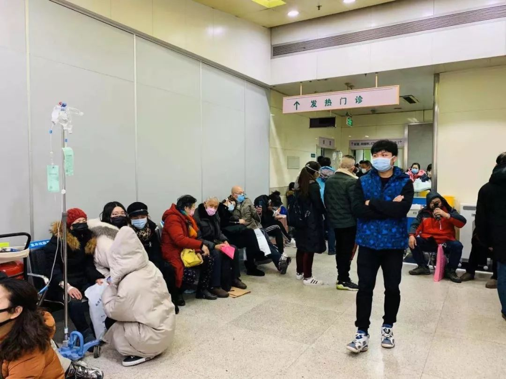
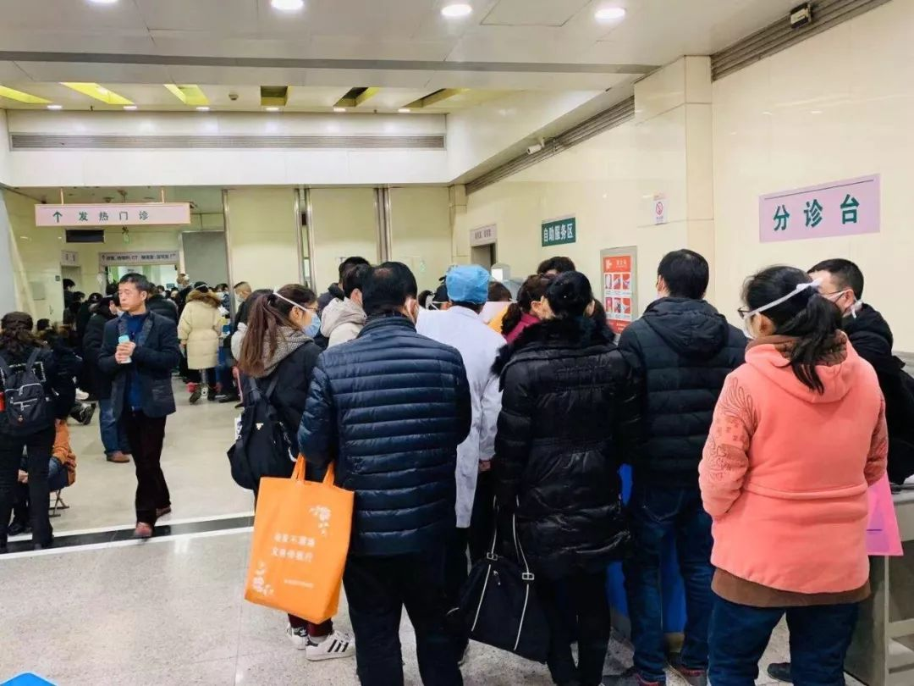

暴风眼中的武汉
原文链接 备份链接 发热门诊排起长龙的就诊队伍似乎在宣告，这座城市正面临一次巨大的挑战。 全文4742字，阅读约需9分钟 ▲湖北各地出现口罩防护服等防疫物资短缺 拟请求国家支援。新京报我们视频出品（ID：wevideo） 距离除夕还有3 …

这是较早一批感染者之一，发病住院时还没有“新型冠状病毒”的称谓。经历17天隔离治疗，如今痊愈回家
2020年1月11日，工作人员在武汉华南海鲜批发市场西区（主要经营海鲜、水产等）进行检查。图/法新
文 |《财经》记者 赵天宇 信娜 辛颖 实习记者 朱贺
编辑 | 王小
丈夫感染过新型冠状病毒，痊愈出院已经一周，陈丹依然每天关注着武汉新型冠状病毒的病例情况和专家评论。
家住武汉，陈丹的丈夫曾去过武汉市华南海鲜批发市场，大约一周后，因咳嗽、发烧，2019年圣诞节前夕去武汉市同济医院就诊，谁想一去在医院过了新年，经历转院、隔离， 23天后，终于在2020年春节前痊愈走出医院。
如今回忆起之前的诊疗过程，“都过去了，还好。”陈丹对《财经》记者说。但是随着周围人听说这家有人患过新型冠状病毒，人际往来受到些影响。
截至1月21日24时，国内13省（区、市）累计报告新型冠状病毒感染的肺炎确诊病例440例，死亡9例。
陈丹的丈夫，正是这440个确诊病例中的一员。
患者曾反复发烧，但妻子没有感染
起初，陈丹的丈夫开始咳嗽、发烧，家人都以为他是感冒了。2019年12月23日，他去武汉市同济医院看了病，医生认为是感冒，给开了治疗感冒的药物。可是，回家后病仍不见好转，每天晚上发烧，察觉到有些不对劲，于是陈丹的丈夫又去同济医院，并住院两天。
“在同济医院时，他发病很厉害。总在发烧，反复发烧。”陈丹告诉《财经》记者，丈夫平时身体很好，很少生病，吃感冒药的情况都很少，一般都能自己扛过去。



武汉同济医院发热门诊 。采访对象供图
从临床表现来看，新型冠状病毒肺炎起病以发热为主要表现，可合并轻度干咳、乏力、呼吸不畅、腹泻等症状，流涕、咳痰等其他症状少见。一半患者在一周后出现呼吸困难。
在2019年的倒数第二天，同济院方将陈丹的丈夫转诊到武汉市金银潭医院，进行隔离治疗。
同在这一天晚间，武汉市卫健委发布紧急通知，主题为“报送不明原因肺炎救治情况”。其中写道，根据上级紧急通知，武汉市华南海鲜市场陆续出现不明原因肺炎病人。消息迅速传播发酵。
陈丹提到，丈夫发病前一星期左右，曾去过武汉市华南海鲜批发市场。这个市场从2019年12月31日起已经被武汉市政府关闭，并进行了清理和消毒。中国疾控中心副主任、国家卫健委专家组专家冯子健曾说，通过各种各样调查，新型冠状病毒的相关证据大多指向华南海鲜批发市场。
此次新型冠状病毒肺炎在免疫功能低下和免疫功能正常人群均可发生，与接触病毒的量有一定关系。如果一次接触大量病毒，即使免疫功能正常，也可能患病。
陈丹丈夫在去过华南海鲜批发市场一星期后发病，这与后来公布的新型冠状病毒的潜伏期长度相吻合。
2020年1月20日，国家卫健委专家组成员高占成说，从现有病例来看，病毒潜伏期平均7天左右，短的2到3天，长的12天。与武汉新型冠状病毒属于冠状病毒家族β属的SARS病毒，潜伏期最常见为3—5天。
陈丹丈夫转院至武汉市金银潭医院，就开始了隔离治疗。金银潭医院以诊治传染病见长，该医院的感染性疾病科是国家临床重点专科，因此成为武汉专门收治新型冠状病毒感染肺炎患者的定点医院。
据《新京报》消息，目前金银潭医院已禁止除相关医护人员和患者外的其他人进入住院大楼。
在金银潭医院的17天里，由于是隔离治疗，陈丹见不到丈夫本人，送东西进去都是由医务人员帮忙转交。
被隔离的患者，可以用手机视频来向外面的亲人传递身体健康情况。陈丹每天都会问丈夫，“病情怎么样了，发不发烧了？”
作为较早一批感染的患者，陈丹和丈夫当时并无从知晓是病毒作怪，甚至丈夫感染的病毒名称——“新型冠状病毒”，都是世界卫生组织在1月12日才命名的，当时他早已在医院接受隔离治疗近两周。
往前回溯，从丈夫开始发烧，一直到转入金银潭医院之前这段时间，陈丹一直在丈夫身边照顾他。
陈丹的丈夫住进金银潭医院第二天，2019年12月31日，武汉市卫健委发布通报，当时已发现27例确诊病例，其中7例病情严重，“经多方分析，上述病例系病毒性肺炎，且未发现明显人传人现象”。
随着病例数增长、研究的深入，半个月后，2020年1月15日，武汉市卫健委在描述新型病毒传播途径时，增加了“不能排除有限人传人可能”。1月20日，钟南山在介绍疫情防控情况的记者会上说，已经“证实了有人传人的传染。”彼时，陈丹的丈夫已经治愈出院了。
幸运的是，陈丹没有感染新型冠状病毒。“我不放心，自己去金银潭医院查了一下，采血检查后，没什么问题。”陈丹一家为此庆幸。
隔离17天治愈出院
“我一直都很担心。”陈丹告诉《财经》记者，丈夫住院时没有特效药，家人难免担心。
国家卫健委高级别专家组组长、中国工程院院士钟南山在1月20日的疫情防控情况的记者会上说，到现在为止，针对病情还没有特效药。“说实在的，17年前的非典到这个阶段为止也没有特效药，非常难。”
在金银潭医院治疗了一个星期左右，陈丹的丈夫病情开始出现好转的迹象，慢慢就不咳嗽、不发烧了。具体治疗用药方案，他们并不清楚。
《财经》记者获悉，1月21日，中部地区某县卫生管理部门下发了一则通知，主题为“新型冠状病毒感染的肺炎治疗和防控等方案》（下称“诊疗方案”），来源是国家卫健委，时间为1月15日。
该诊疗方案显示，如果患者确诊新型冠状病毒肺炎，一般治疗方案需要卧床休息，保证充分热量，注意水、电解质平衡，监测生命体征、指氧饱和度，并根据病情监测血常规、尿常规以及生化指标、凝血功能等。
并且，依据病情程度，新型冠状病毒患者还可以接受氧疗、抗病毒治疗、抗菌药物治疗以及中医药治疗，这也是比较常见的治疗方法。
该诊疗方案建议，可试用α-干扰素雾化吸入，疗程至少5天。
干扰素具有广谱的抗病毒及免疫调节作用。雾化吸入疗法，是用专用的雾化装置，使药物直接作用于气道黏膜，达到洁净、湿化气道，起效迅速、疗效确切。常用于慢性支气管炎急性发作、儿童流行性感冒等。
在金银潭医院的17天里，在陈丹看来，丈夫的治疗过程与普通的肺炎等疾病看起来差不多，有时候她会在和丈夫视频时，看到早上丈夫在输液；有时候丈夫会提到，今天又抽了血。
按照上述诊疗方案，如果患者的病情进展到危重症阶段，医院可能采取呼吸支持，使用“肺保护性通气策略”以降低呼吸机相关肺损伤。
陈丹的丈夫在金银潭医院时，医院为他做了采血、肺部CT等一系列的检查。陈丹说，丈夫烧退了、人舒服了，视频时看着他一天比一天好起来，“这时候心才慢慢放下来，感觉挺高兴的”。
“我们确实积累了一定的经验；治疗的措施跟支持疗法，跟以前比有很大的进步。”1月20日晚，国家卫健委高级别专家组组长、中国工程院院士钟南山接受央视采访时说。
钟南山介绍，现在他们在做一些实验观察，对冠状病毒有一些研究；正在进行动物实验，同时也对一些候选的中药进行观察研究。病情研究不能靠碰运气，科学研究要跟上，这也是现在非常重要的一步措施。
1月22日，国家卫生健康委员会副主任李斌在国新办的防控新闻发布会上说，“充分发挥专家力量，尽快查明传染来源、传播途径，有针对性地做好抗病毒药物的研发和筛选。”
此前，中部地区某县医院曾接到上级卫生管理部门通知，要求储备充足的抗病毒药物。一名该县医院医生对《财经》记者说，“接到的通知是，没有对这类新型冠状病毒的特效药，要求每个医院储备常用抗病毒药物”，如奥司他韦、阿昔洛韦等抗病毒药物。
九州通相关负责人向《财经》记者介绍，1月20日，该公司总代理的一款奥司他韦的单日出货量暴涨至近3000万元，21日单日销售突破1个亿（含少量医院渠道销量）。为了保障湖北武汉等病例较为密集区域用药需求，现正在从江西、湖南长沙等地向武汉调货。
2020年1月中旬陈丹的丈夫出院回家。陈丹说，丈夫出院至今已经一周左右，没有再出现发烧等症状，也没有发生任何不适，她认为治疗是有效的。
至于这次病毒感染两次住院治疗的费用，陈丹说，目前是医保报销一部分。
1月21日，国家医保局的微信公众号消息，针对此次疫情特点，医保局决定对确诊为“新型冠状病毒感染肺炎”等患者采取特殊报销政策，将国家卫生健康委《新型冠状病毒感染的肺炎诊疗方案》覆盖的药品和医疗服务项目，全部临时纳入医保基金支付范围。
武汉市卫健委官方微博信息称，截至1月19日24时，武汉市已治愈出院25例新型冠状病毒患者。陈丹的丈夫正式其中一位幸运者。
由于目前人类对该疾病的认识不够深入，即便已经痊愈，人们依然在密切关注该病毒的病例情况和诊疗方式。
以往的SARS治疗中，一些患者留下了后遗症，例如骨头坏死、肺部纤维化等，一些专家认为抢救中使用的激素类药物是导致骨头坏死的主要原因。2004年3月，原北京市卫生局曾成立专家组，对SARS后遗症患者开始进行系统治疗。
“有些问题我们也在关注，比如说这个病能不能好彻底？”陈丹说，她还关心这个病究竟何时能有特效药。
（陈丹为化名）
【声明】本文为《财经》与腾讯新闻独家合作内容，谢绝转载
**推荐阅读**

*一人感染14名医务人员，武汉新型病毒正在增强，需警惕超级传播者*

*“武汉肺炎”确诊病例突增，中国紧急布设三道防线迎大考*
责编 | 黄端 duanhuang@caijing.com.cn
本文为《财经》杂志原创文章，未经授权不得转载或建立镜像。如需转载，请在文末留言申请并获取授权。
原文链接 备份链接 发热门诊排起长龙的就诊队伍似乎在宣告，这座城市正面临一次巨大的挑战。 全文4742字，阅读约需9分钟 ▲湖北各地出现口罩防护服等防疫物资短缺 拟请求国家支援。新京报我们视频出品（ID：wevideo） 距离除夕还有3 …
原文链接 备份链接 截至1月21日24时，13个省（区、市）累计报告新型肺炎确诊病例440例。 专家认为，1月18日以来确诊病例迅速增加，有疫情由“一代病例”转为“二代病例”的因素。 此次冠状病毒肺炎疫情传播，可明确是二代病例的，迄 …
原文链接 备份链接 1月20日官方公布的感染武汉新型冠状病毒患者激增之前，武汉街头看起来和平时没多少不同。从1月20日开始，戴口罩的人突然多了起来。但其实这场病毒的袭击从大约一个月前就开始了，直到今天才引起更大范围的注意。 记者 | …
原文链接 备份链接 截至20日晚上20点，境内累计确诊新型冠状病毒感染肺炎病例218例，疑似病例7例，死亡4例，治愈出院25例。 武汉共有15名医务人员确诊为新型冠状病毒感染的肺炎病例，另有1名为疑似病例。 国家卫健委高级别专家组组 …
原文链接 备份链接 新型冠状病毒感染肺炎疫情扩大。武汉本地两天新增确诊136例，死亡1例，治愈出院6例。 北京大兴区新增2例，有武汉旅行史；广东深圳新增1例，曾到武汉探亲。这是内地首次在武汉之外的城市报告病例。 国家卫健委卫生应急办 …